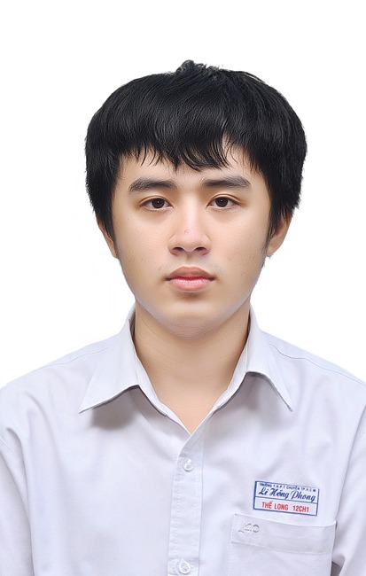

Long Nguyen
Software Engineer at Nokia developing AI-RAN solutions for 5G Physical Layer (L1) communications using CUDA, C++, and high-parallel computing. Simultaneously pursuing dual Master's degrees at Aalto University and Tampere University with distinction (GPA 4.43 / 4.51).

About Me
I am a Software Engineer at Nokia working on AI-RAN, focusing on the L1 aspect of 5G mobile communications. My daily work revolves around real-time digital signal processing, CUDA-accelerated high-performance computing, and modern C++ engineering for mission-critical telecommunications systems.
Parallel to industry work, I am completing dual Master’s degrees: Master of Science in Technology (Machine Learning, Data Science & AI) at Aalto University and Master's in Computing Sciences (Signal Processing & Machine Learning) at Tampere University. I completed over 244 ECTS in two years (more than double the standard rate) while maintaining top academic performance.
Beyond wireless communications, I architect quantitative reinforcement learning trading frameworks, exploring multi-timeframe feature engineering, causal simulation, and high-frequency statistical pipelines.
Work & Research Experience
- Developing high-performance L1 physical layer components for Nokia's next-generation AI-RAN platform.
- Implementing high-parallel computing kernels in CUDA and C++ for real-time 5G signal processing.
- Optimising latency and throughput constraints in mobile communication systems.
- Developed visualization tools and automated dashboards for 5G system modelling and performance analysis.
- Integrated continuous integration (CI) workflows and contributed in an Agile Scrum engineering team.
Topic: 5G Physical Layer Channel Conditions Classification Using Machine Learning Techniques
- Engineered deep learning models for classifying 5G NR TDL/CDL channel conditions and LOS/NLOS detection.
- Conducted rigorous robustness evaluation under severe domain shift in wireless propagation environments.
- Engineered a custom Java Spring Boot desktop interface eliminating XML configuration errors for BIM quality check pipelines.
- Implemented dynamic directory scanning, automated input validation, and intuitive Figma-prototyped UI.
- Recognised with a €3 000 Project Scholarship for outstanding engineering and delivery.
- Instructed lab sessions (Coditoriums) and assisted undergraduate students in advanced Java, API design, and design patterns.
- Evaluated software projects, provided code reviews, and fostered clean architectural habits.
Projects Timeline
Chronological research frameworks, applied engineering, and thesis projects.
A comprehensive research framework for building, training, replaying, and inspecting reinforcement-learning trading policies (PPO / SAC). Features timestamped market-data pipelines, causal multi-timeframe feature calculations, broker-neutral interfaces, simulated execution, and rigorous evaluation with full experiment management.
Open research framework for 5G NR physical layer channel analysis and classification (TDL / CDL channel condition models). Investigated physically grounded LOS/NLOS detection under severe domain shift in wireless propagation environments to support adaptive L1 baseband processing.
Engineered a desktop application with Java Spring Boot and JavaFX designed to eliminate syntax and semantic errors in complex XML automated building information modeling (BIM) model checking. Featured dynamic directory scanning, automated input constraint validation, Figma UI design, and SonarQube code quality assurance.
Synthesised lateral chest radiographs from frontal views using a custom CycleGAN framework with UNet–ResNet architecture and Self-Organised Operational Layers (SOOL). Overcame cross-projection ambiguities in medical imaging to enhance anatomical and diagnostic fidelity.
Education
Technical Skills
Certifications & Honors
Let's Connect
I am always interested in discussing cutting-edge AI technologies, 5G wireless systems, high-performance computing, or new engineering opportunities. Feel free to reach out directly!